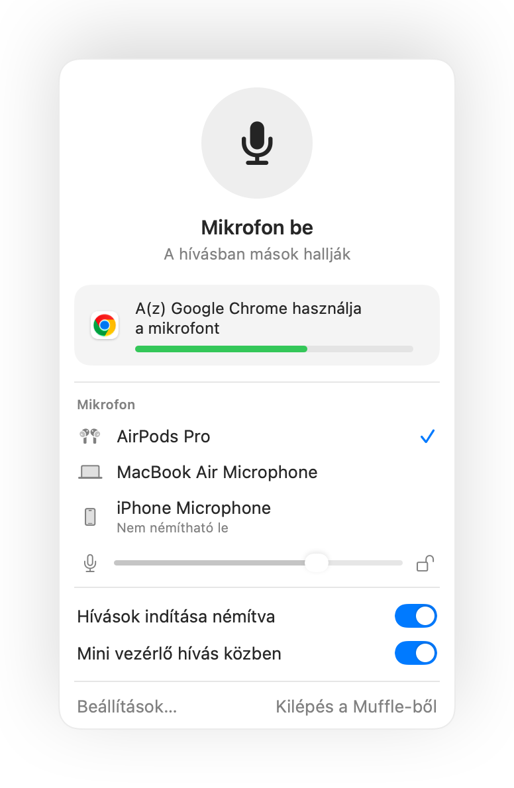

Hogyan némítható el a mikrofon Macen
A Mac billentyűzetén nincs külön gomb a mikrofon némítására. Az alkalmazástól és a helyzettől függően több lehetőség is létezik, de ezek közül csak néhány működik mindenhol.
Próbálja ki a Muffle-t ingyen 3 napigHamarosan a Mac App Store-ban
A választható lehetőségek
- A hívásalkalmazás saját gombja vagy billentyűparancsa. Ez kizárólag az adott appban működik, és csak akkor, ha az ablak van elöl.
- Rendszerbeállítások, Hang, Bemenet. A bemeneti szint nullára húzása nem minden mikrofonnál jelent valódi némítást, és az alkalmazások újra felhangosíthatják.
- Globális billentyűparancs a Muffle segítségével. Egyetlen billentyű magát a mikrofont némítja le, minden alkalmazásban.
- Az AirPods fülhallgató. A Muffle használatával a szár megnyomása bármelyik hívást elnémítja, beleértve a Google Meet hívásokat is Chrome-ban.

- A Muffle menüsor ikonja pirosra vált, amíg a mikrofon ki van kapcsolva, függetlenül attól, hogy melyik alkalmazást használja éppen.
- A Muffle bezárása mindig visszakapcsolja a mikrofont.
Kérdések
Van beépített mikrofongomb a némításhoz a Macen?
Rendszerszintű megoldás nincs. A macOS csak azokban az alkalmazásokban némítja el a mikrofont, amelyek ezt támogatják. A Muffle valódi rendszerszintű némítást nyújt.
A Muffle általi némítás minden alkalmazást elnémít?
Igen. A Muffle minden mikrofont hardverszinten kapcsol ki, így semelyik alkalmazás nem hallja önt, amíg vissza nem kapcsolja a némítást.